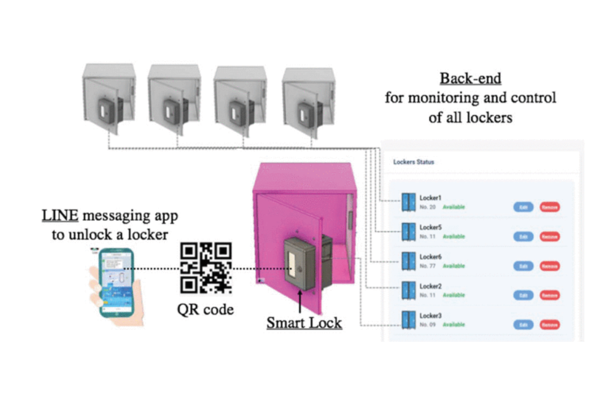
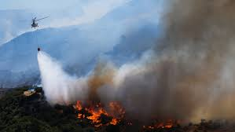
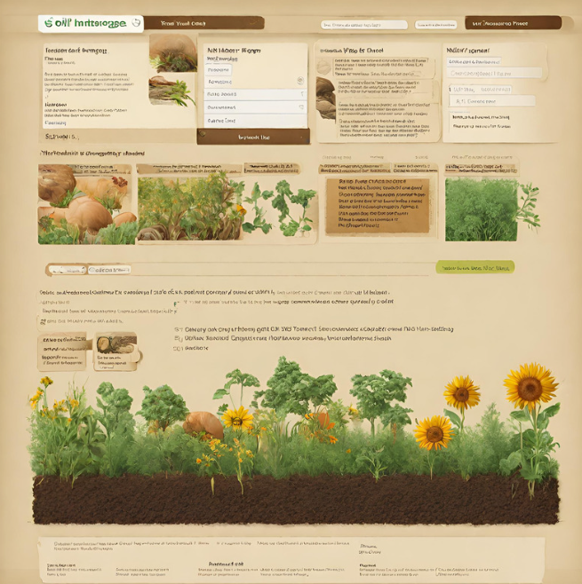

Proje 1: Güneş Enerjili Akıllı Su Arıtma Sistemi

Bu proje, mevcut su kaynaklarını güneş enerjisi gibi yenilenebilir enerji kullanarak içilebilir suya dönüştürmeyi ve bu yolla gelecekteki su kıtlıklarını önlemeyi hedefliyor. Amacı, toplumların sürdürülebilir şekilde içme suyuna erişimini sağlamak ve sağlıklı yaşam koşullarını desteklemek. Güneş enerjisiyle çalışan su arıtma sistemi, temiz enerjiyi kullanarak su arıtımını düşük maliyetle erişilebilir hale getiriyor. Proje kapsamında, içme suyu üretimi için uygun bölgeler analiz ediliyor ve sürdürülebilir su üretim sistemleri geliştiriliyor. Aynı zamanda, yerel toplulukların içme suyu ihtiyacını karşılayacak tesisler kurulurken çevresel etkiler de sürekli izlenip azaltılıyor.
Proje 2: Akıllı Depolama Sistemi
Bu proje, insanların şehir içinde sosyalleşirken veya plaj ve eğlence merkezleri gibi yerlerde kişisel eşyalarını geçici olarak güvenli bir şekilde muhafaza edebilmeleri için BlueBOX adı verilen akıllı dolap alanları sağlamayı hedefliyor. Şehir merkezi, plajlar ve eğlence alanlarına yerleştirilen bu dolaplar, kullanıcıların ortalama beş dakikalık yürüme mesafesinde olacak şekilde konumlandırılıyor. Kullanıcılar uygulama üzerinden en yakın BlueBOX’ları bulabiliyor, kiralayabiliyor ve tek bir tuşla dolaplarını açabiliyorlar. BlueBOX'lar sayesinde kullanıcılar eşyalarını yanlarında taşımak zorunda kalmadan güvenle bırakabiliyor. Bu proje, geleneksel dolapları dijitalleştirerek akıllı dolaplara dönüştürmeyi amaçlıyor.
Proje 3: Sensörlü Acil Müdahale ve Yangın Söndürme Sistemi
Bu proje, orman yangınlarına erken müdahale için sıcaklık sensörleri, yeraltı su depolama sistemi ve IP kameralarla donatılmış bir erken uyarı ve müdahale sistemi geliştirmeyi amaçlıyor. Ağaçlara yerleştirilen sıcaklık sensörleri, sıcaklık eşik değerin üzerine çıktığında yangın ihtimalini tespit ederek yetkili merkezlere uyarı gönderiyor. Bu sayede, yangın alanına yetkililer ulaşana kadar yangının büyümesi yavaşlatılıyor, hatta durdurulabiliyor. Ayrıca yeraltı su depolama sistemiyle yangın bölgesine taşınan su, yangının erken safhasında müdahale imkânı sunuyor. IP kameralar da yangın bölgesini izleyerek anlık görüntülerle yangının yayılma durumunu takip etmeyi sağlıyor.
Proje 4: Verimli Toprak ve İklim Haritası
Bu proje, Türkiye’nin farklı bölgelerindeki toprakların analizini yaparak bitki yetiştirme süreçlerine rehberlik etmeyi hedefliyor. Toprak ve iklim faktörlerini bir araya getirerek, sürdürülebilir tarım uygulamalarını teşvik ediyor ve toprak kullanımını optimize etmeyi amaçlıyor. Kullanıcılar, doğru bitkiyi doğru toprakta yetiştirerek verimliliği artırabilir ve doğal kaynakları daha etkin yönetebilirler. Türkiye Toprak Analitik ve Bitki Yetiştirme Rehberi, toprak ve bitki yetiştiriciliği için önemli bir kaynak sağlamayı amaçlıyor.